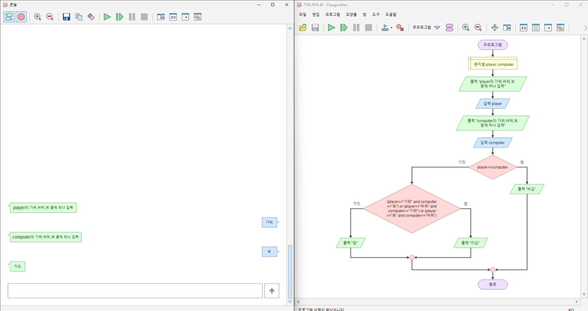
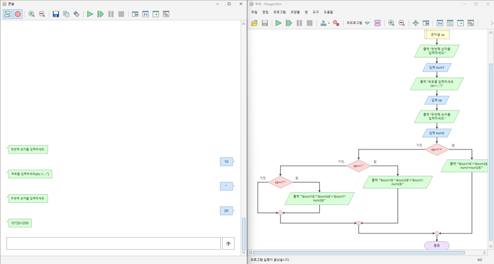
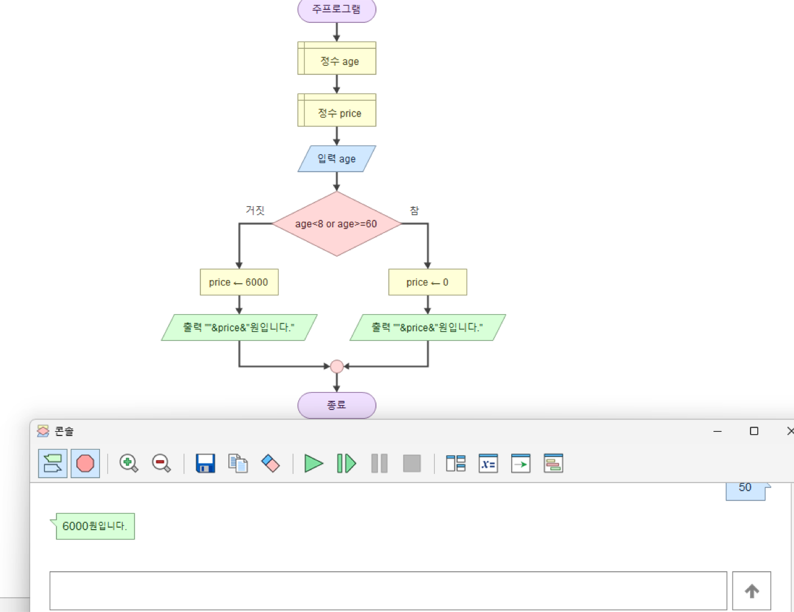
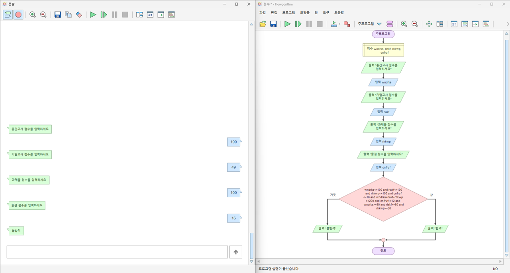
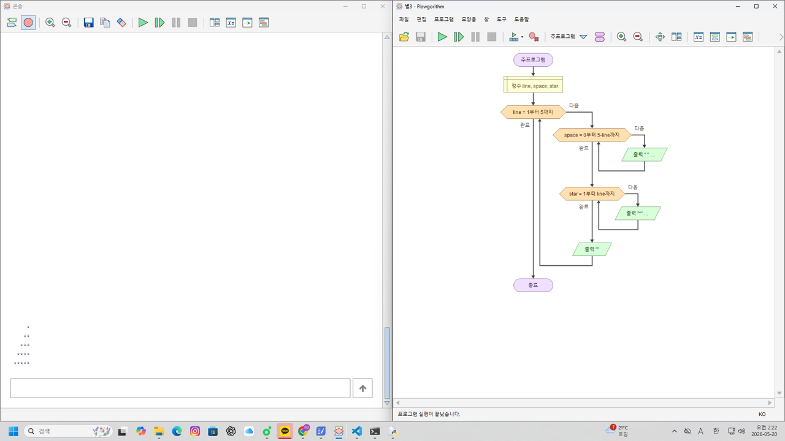
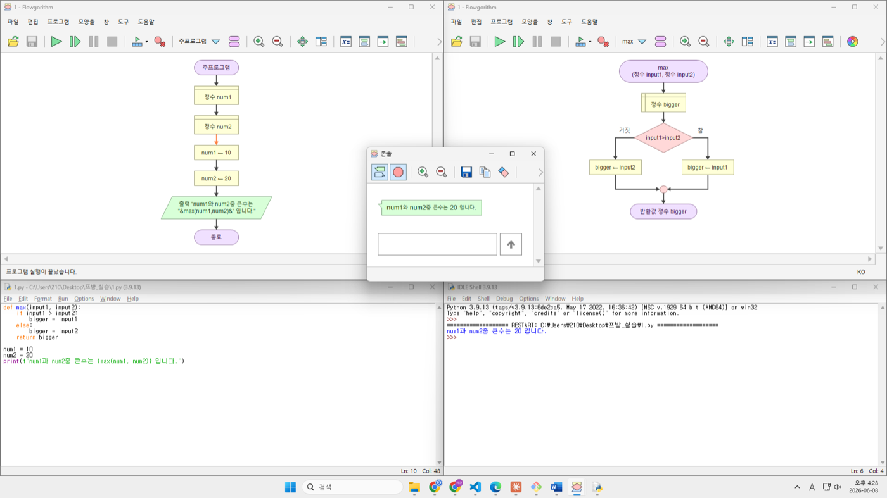
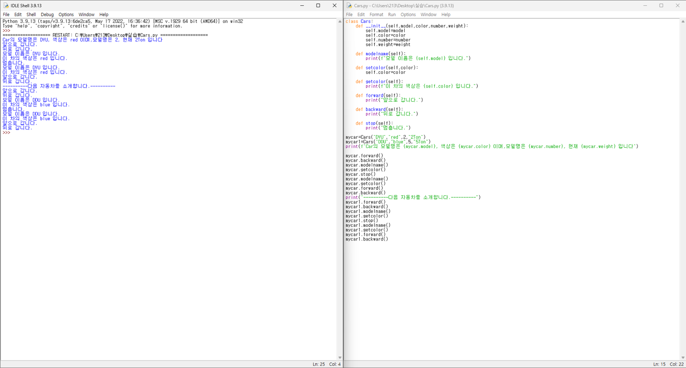

시험범위 : 9~14주차 — 순서도(Flowgorithm)로 설계하고 파이썬으로 구현하기
| 기호 | 의미 | 파이썬 예 |
|---|---|---|
| 타원(시작/끝) | 프로그램의 시작과 종료 | 코드의 처음·끝 |
| 평행사변형(입출력) | 값을 입력받거나 출력 | input() / print() |
| 직사각형(처리) | 변수에 값 대입·계산 | add = a + b |
| 마름모(조건) | 참/거짓으로 흐름 분기 | if ... else ... |
| 구조 | 순서도 모양 | 파이썬 |
|---|---|---|
| 순차 | 위 → 아래 일렬 | 한 줄씩 차례대로 실행 |
| 선택 | 마름모에서 참/거짓 갈래 | if / elif / else |
| 반복 | 되돌아가는(루프) 화살표 | for / while |
9~14주차 과제로 직접 그린 순서도입니다. 변환 규칙 → 마름모는 if/elif/else, 육각형(반복)은 for/while, 서브프로그램은 def, 반환값은 return. (이미지를 클릭하면 크게 볼 수 있어요)

player==computer면 비김, 거짓이면 중첩 마름모로 이김/짐 판정. 👉 2번 문제의 설계도
op 값에 따라 +·−·× 로 갈라지는 elif 사슬(중첩 분기).
age<8 or age>=60 → 무료(0), 아니면 6000원. or 복합조건.
and로 묶은 하나의 큰 마름모로 합격/불합격.
line 루프 안에 space·star 루프가 들어간 중첩 반복. 👉 3번 문제
def / return. 👉 5번 문제도 함수
__init__으로 속성(model·color·number…) 저장 + 메서드(forward/stop/getcolor…). 클래스는 순서도 대신 코드로. 👉 6번 문제아래 순서도가 곧 2번 문제(judge)의 설계도입니다. 마름모(조건) → if, 중첩 마름모 → 중첩 if로 그대로 옮기면 됩니다.
def judge(player, computer):
if player == computer: # 마름모1
return "비김"
else:
if (player == "가위" and computer == "보") or \
(player == "바위" and computer == "가위") or \
(player == "보" and computer == "바위"): # 마름모2
return "이김"
else:
return "짐"leap(year)를 작성하세요.▸ 윤년 규칙 : 4의 배수 그리고 100의 배수가 아님 또는 400의 배수
| 개념 | 설명 |
|---|---|
| 나머지 연산 % | year % 4 == 0 → 4로 나누어떨어짐 |
| and / or 우선순위 | and가 or보다 먼저 → (A and B) or C |
| 채점 방식 | 2000·1900·2024·2023 등 여러 연도로 자동 검사 |
def leap(year):
if year % 4 == 0 and year % 100 != 0 or year % 400 == 0:
return "윤년"
else:
return "평년"judge(player, computer)가 "비김" / "이김"(player 승) / "짐" 중 하나를 반환하게 하세요. (위 순서도 그대로)▸ player가 이기는 3조합 : (가위→보) · (바위→가위) · (보→바위)
| 개념 | 설명 |
|---|---|
| 중첩 if | 마름모(조건) 안에 또 마름모 → else: 안의 if |
| 복합 조건 or | 이기는 3가지 경우를 or로 한 번에 |
| 문자열 비교 | player == "가위" |
def judge(player, computer):
if player == computer:
return "비김"
else:
if (player == "가위" and computer == "보") or \
(player == "바위" and computer == "가위") or \
(player == "보" and computer == "바위"):
return "이김"
else:
return "짐"n을 입력받아 직각삼각형 별을 출력하세요. (i번째 줄에 별 i개)*
**
***
****
*****| 개념 | 설명 |
|---|---|
| 중첩 for | 바깥 for=줄, 안쪽 for=별 개수 |
| print(end="") | 줄바꿈 없이 이어서 출력 |
| print() | 한 줄 다 찍고 줄바꿈 |
n = int(input("줄 수: "))
for line in range(1, n + 1):
for star in range(line):
print("*", end="")
print()dan)을 입력받아 1~9까지 곱셈식을 출력하세요.3 * 1 = 3
3 * 2 = 6
3 * 3 = 9
...
3 * 9 = 27| 개념 | 설명 |
|---|---|
| range(1, 10) | 1부터 9까지 (10은 미포함) |
| f-string | f"{dan} * {j} = {dan*j}" |
dan = int(input("단: "))
for j in range(1, 10):
print(f"{dan} * {j} = {dan * j}")n! 을 재귀로 계산하는 factorial(n)을 작성하세요. (n ≥ 1)▸ factorial(5) = 5 × 4 × 3 × 2 × 1 = 120
| 개념 | 설명 |
|---|---|
| 재귀(recursion) | 함수가 자기 자신을 호출 |
| 종료조건 | n == 1 이면 1 반환 (무한재귀 방지) |
| 재귀식 | n * factorial(n - 1) |
def factorial(n):
if n == 1:
return 1
else:
return n * factorial(n - 1)Student 클래스를 완성하세요.▸ __init__(self, name, korean, math, english, science) · get_sum() · get_average()
| 개념 | 설명 |
|---|---|
| __init__ / self | 객체 생성 시 속성 초기화, self.korean = korean |
| 메서드 | 객체에 속한 함수 — 합/평균 계산 |
| 메서드 재사용 | get_average는 self.get_sum()/4 |
class Student:
def __init__(self, name, korean, math, english, science):
self.name = name
self.korean = korean
self.math = math
self.english = english
self.science = science
def get_sum(self):
return self.korean + self.math + self.english + self.science
def get_average(self):
return self.get_sum() / 4